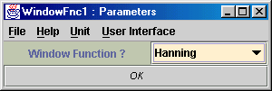

Algorithms Index , Frequency-Domain
Filtering in Triana , Time-Domain
Filtering in Triana, Triana Spectral
Storage Model
WindowFnc
Author : Ian Taylor, Bernard Schutz
Version: 2.0
Input Types : VectorType,
TimeFrequency
Output Types : VectorType,
TimeFrequency
Date : 3 March 2001
Contents
Description of WindowFnc
WindowFnc allows the user to apply one of six window functions to the input
data set. A window function is a function which is multiplied into a data
set in order to taper it at its edges. Such functions begin at a small
value, rise smoothly to a peak, and then fall again in a symmetrical way.
The choices offered here defined below.
The unit can accept any VectorType
input, and works intelligently on special types. By default, it scales
the chosen window to the width of the input data set, multiplies the data
(real or complex is allowed) by the window, and outputs a data set of the
same type as the input but with the shaped data. However, if the input
is a Spectrum
or ComplexSpectrum,
then the function is applied in a way that matches the meaning of the data.
If the input spectrum contains zero-frequency, then the shaping is applied
only to the upper-frequency limit of the data. If the data is narrow-band
and does not include zero-frequency, then the shaping is applied to the
frequency band, rounding it off at its lower and upper limits.
The unit can also accept TImeFrequency
input data. It windows the frequency dimension of this two-dimensional
data set, using the same principles as described in the previous paragraph,
and outputs a TimeFrequency
data set containing the shaped data.
Windowing can be used with Fourier transforms to make the result of
a transform seem more reasonable. If a time-series has sharp edges, then
its Fourier transform will show oscillations or peaks. Rounding the shoulders
of the time-series makes the Fourier transform smoother. Conversely, if
the window function is applied to a spectrum before it is inverted to the
time domain, then the inversion will be smoother and not show the oscillations
that sharp edges in the spectrum would generate. The FFT
unit contains the option to apply these windows to the input time-series
data. Other units offer rounding of spectral data sets using these as well:
WinFT,
LowPass,
HighPass,
BandPass,
MultiBand,
and HetdyneF. Windowing
is also available for time-domain filtering in the units FIR_LowPass,
FIR_HighPass,
FIR_BandPass.
Using WindowFnc
The parameter window for WindowFnc is shown below:

Just select the appropriate window from the choice box.
Description of the Windows
The built-in windows are defined by the following names (see below
for a reference) and associated functions, all of which are given here
on the domain (-0.5, 0.5):
-
Rectangle: 1
-
Bartlett: 1 - 2*|x|
-
Blackman: 0.42 + 0.5*cos(2*pi*x) + 0.08*cos(4*pi*x)
-
Gaussian: exp(-18*x^2).
-
Hamming: 0.54 + 0.46*cos( 2*pi*x)
-
Hann: cos^2(pi*x) (also known as Hanning)
-
Welch: 1 - 4*x^2
-
BlackmanHarris92: 0.35875 + 0.48829*cos( 2*pi*x ) + 0.14128*cos( 4*pi*x
) + 0.01168*cos( 6*pi*x )
-
Nuttall3: 0.375 + 0.5*cos( 2*pi*x ) + 0.125*cos( 4*pi*x )
-
Nuttall3a: 0.40897 + 0.5*cos( 2*pi*x ) + 0.09103*cos( 4*pi*x )
-
Nuttall3b: 0.4243801 + 0.4973406*cos( 2*pi*x ) + 0.0782793*cos( 4*pi*x
)
-
Nuttall4: 0.3125 + 0.46875*cos( 2*pi*x ) + 0.1875*cos( 4*pi*x ) + 0.03125*cos(
6*pi*x )
-
SFT3F: 0.26526 + 0.5*cos( 2*pi*x ) + 0.23474*cos( 4*pi*x )
-
SFT4F: 0.21706 + 0.42103*cos( 2*pi*x ) + 0.28294*cos( 4*pi*x ) + 0.07897*cos(
6*pi*x )
-
SFT5F: 0.1881 + 0.36923*cos( 2*pi*x ) + 0.28702*cos( 4*pi*x ) + 0.13077*cos(
6*pi*x ) + .02488*cos( 8*pi*x )
-
SFT3M: 0.28235 + 0.52105*cos( 2*pi*x ) + 0.19659*cos( 4*pi*x )
-
SFT4M: 0.241906 + 0.460841*cos( 2*pi*x ) + 0.255381*cos( 4*pi*x ) + 0.041872*cos(
6*pi*x )
-
SFT5M: 0.209671 + 0.407331*cos( 2*pi*x ) + 0.281225*cos( 4*pi*x ) + 0.092669*cos(
6*pi*x ) + 0.0091036*cos( 8*pi*x )
-
FTNI: 0.2810639 + 0.5208972*cos( 2*pi*x ) + 0.1980399*cos( 4*pi*x )
-
FTHP: 1.0 + 1.912510941*cos( 2*pi*x ) + 1.079173272*cos( 4*pi*x ) + 0.1832630879*cos(
6*pi*x )
-
FTSRS: 1.0 + 1.93*cos( 2*pi*x ) + 1.29*cos( 4*pi*x ) + 0.388*cos( 6*pi*x
) + 0.028*cos( 8*pi*x )
-
HFT70: 1 + 1.90796*cos( 2*pi*x ) + 1.07349*cos( 4*pi*x ) + 0.18199*cos(
6*pi*x )
-
HFT95: 1 + 1.9383379*cos( 2*pi*x ) + 1.3045202*cos( 4*pi*x ) + 0.4028270*cos(
6*pi*x ) + 0.0350665*cos( 8*pi*x )
-
Kaiser3, Kaiser4, Kaiser5, Kasier6, Kasier7: All Kaiser windows are computed
from the following formula, which depends on the parameter alpha:
I0(pi*alpha*sqrt(1-4*x^2))/I0(pi*alpha),
where I0 is the Bessel function of order 0. The value of alpha
used for a particular window is given in its name: Kaiser3 uses alpha=3,
for example.
All windows defined here are symmetrical about their center (x=0), and
(except for Rectangle) they taper monotonically to a very small value from
a maximum of 1. When a window function is used, its domain is scaled to
the width of the input data set. If a window width has an odd number of
elements, then the central value is 1 and values are sampled from the continuous
functions defined here on either side of the maximum. If the window width
is even, then the values are sampled symmetrically about the maximum, so
that the maximum is not actually a sampled value. Note that the Rectangle
window is not really a window at all: it does not modify the input data.
The reference used for constructing these windows,
and for naming them, is: G Heinzel, A Rudiger, R Schilling, "Spectrum and
spectral density estimation by the discrete Fourier transform (DFT), including
a comprehensive list of window functions and some new flat-top windows",
preprint (2002). Contact: ghh@mpq.mpg.de